-

140平米三居室装修案例,古典与时尚的交融
小编倾情为您推荐一套很是别致的140平米三居室装修案例，古典与时尚的交融可谓天衣无缝，看完之后令人不得不赞叹。这套三居室的房子采用的是简欧风格的装修，不同于古典欧式风格，简欧风格不仅拥有华丽的外表，也有着时尚精致的内在，会通过色调搭配的改变、细节处理的创新，让人们感受到古典华贵气质与现代新潮元素的奇妙结合，相信这套140平米三居室装修案例绝对不会让您失望。户型：三居室 风格：简欧 费用：15万 面积：140平米
-
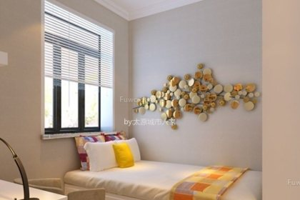
小户型卧室装修案例,小而美的休憩地
在一个家居里，不是每个卧室的大小都会一样，至少主卧室看起来就会比较宽敞大气，那么也会有小户型的卧室，怎样装修才能使得这个小户型的卧室看起来不那么拥挤呢？来看看这几款小户型卧室装修案例吧。 来看这款小户型卧室装修案例，在窗台旁边设计榻榻米式的床，对面的空间还可以用来摆放书桌，完美的运用了小户型空间的布局。 这款小户型卧室装修案例
-
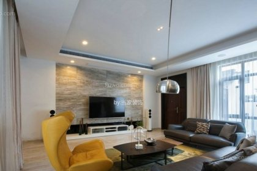
140平复式楼装修设计图,有清新也有大气质感
下面要为大家介绍的这套140平复式楼装修设计图，有清新也有大气质感，无论从哪个角度来说都可以称之为经典。复式楼越来越受到大众百姓的欢迎，虽然不像别墅那样宽敞大气，但是空间层次感相对于一般户型来说也会理想的多，可以说性价比极高，那么复式楼到底应该怎么装修呢？如果我们能够同时营造出大气恢弘和精致秀美的感觉那是最好不过的了，而接下来您要看到的这套140平复式楼装修设计图便是如此效果。户型：复式 风格：现代简约 费用：18万 面积：140平米
-
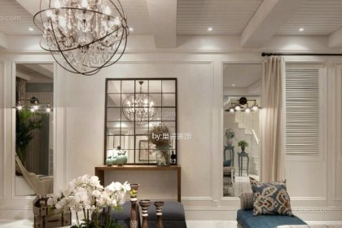
四居室地中海装修效果图,独特浪漫的居家环境
因独特的地理环境，日渐形成的风土人情和建筑风格，不断被当地人传承和发展，使得地中海具有自由奔放、色彩多样明亮的特点，这款四居室地中海装修效果图，整体感觉非常舒适又解风情。 来看四居室地中海装修效果图的客厅，鲜明的湖水蓝沙发凳搭配同色系的沙发凳以及迷彩颜色的地毯在白墙的粉刷下，如此纯美的色彩组合下，彰显了浓郁的地中海风格。 从侧
-

80平现代简约两房一厅装修设计图,时尚新潮有范儿
看完下面小编要为大家介绍的80平两房一厅装修设计图之后，您就会明白原来这样的家装才现代时尚。对于时尚一族来说，不仅吃的穿的需要时尚精致，我们住的房子也必须有超强的时尚新潮感，但是要想打造出这样感觉的房子并不是一件容易的事情，让我们一边欣赏经典的80平两房一厅装修设计图，一边来聊聊现代简约风的装修吧。户型：二居室 风格：现代简约 费用：9万 面积：80平米 这套80平两房一厅装修设计图初看起来并不惊艳，但是
-
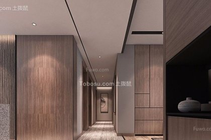
浪漫气息浓厚的艺术典雅欧式两居室装修效果图
欧式风格是以欧洲各国文化传统所表达的强烈的文化内涵。家居装修通过欧式风格风格凸显出追求欧式的浪漫，优雅气质和生活的品质。这样柔和的浪漫情怀，也许就只有欧式两居室装修效果图才能诠释出来。 来看这张欧式两居室装修效果图的玄关走廊，墙面镶以柚木木板，除了柜身自带的线条感外，再没有其他多余的装饰。进门处的玄关柜，上下各为收纳柜，中间设计空挡用来摆放收藏品，简约的意境瞬间迸发出来。
-
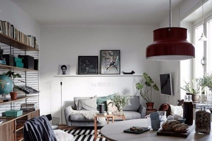
60平米装修简约效果图,原来家也可以文艺
看完下面这套60平米装修简约效果图之后您就会明白，原来家装也可以文艺，只要开动脑筋也可以让自己的小家变得更有品质和格调。对于六十平米的房子来说，采用现代简约风格的装修再合适不过了，吊顶墙壁都不需要太多处理，同时家具造型装饰也以简单明快为主，但是这样的风格并不代表就不好看了，比如今天要为大家介绍的这套60平米装修简约效果图就可以说相当有个性魅力。户型：一居室 风格：现代简约 费用：7万 面积：60平米 虽然
-
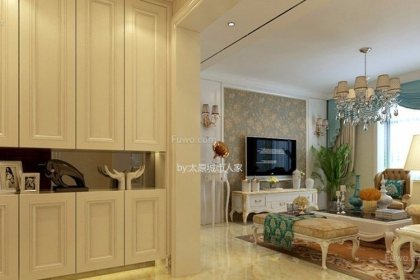
多元家居三居室简欧风格装修效果图
简欧风格即是简化了的欧式装修风格，考虑到日常生活的功能，不能太艺术化和太乡村化，其实用性和多元化非常明显，营造出一种与日常居家不同的感觉。那么一起来看看这款三居室简欧风格装修效果图是如何在实用性与多元化共存的基础上，增添了一份艺术气息。 来看第一张三居室简欧风格装修效果图的玄关处，非常典型的米白色欧式橱柜，中间的隔板用来摆放一些相框与艺术品，为家居生活增添多一份艺术气息。
-
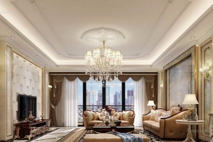
欧式装修客厅效果图,将高贵与典雅诠释
相信很多朋友一想到欧式风格，脑海里就会闪现很多奢华荣贵的家居画面吧？其实不然，欧式风格流露出的可不单只奢华的格调，还有简美与复古的特点。那么一起来看看欧式装修客厅效果图是如何将这些特点发挥的淋漓尽致。 来看第一张欧式装修客厅效果图，第一眼是否就和奢华这个字眼给挂钩了呢？的确如此，从皮质沙发、玻璃茶几、柔软的地毯和华美的水晶吊灯等这些古典家具透露出的高档气派、尊贵典雅，浓厚的欧式古典文化。
-
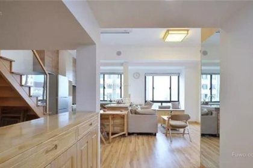
75平米小复式装修,简而不俗雅致温馨
为您特别推荐一套日式风格的75平米小复式装修案例，简而不俗雅致温馨，绝对可以称之为经典家装范本。越来越多的人在买房子时开始考虑小复式，虽然从面积上来说小复式显得有点狭促，但是因为有上下两层结构，因此空间感觉比一般的户型要大气得多，合理布置的话也会营造出别墅的感觉，而下面这套75平米小复式装修案例便是经典之作，相信每个人看了都会喜欢上。户型：复式 风格：日式 费用：12万 面积：75平米 一进门便会感觉到这
-
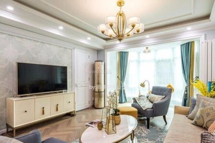
75平米一室一厅装修,绚烂缤纷如初春美景
小编无意间发现了一套很是亮眼的75平米一室一厅装修案例，绚烂缤纷如初春美景，怎么看都觉得完美。这套七十五平米的一居室采用的是美式风格的装修，众所周知美式家装有着极为鲜明的个性，不仅有着欧式的华丽高贵也有着田园的浪漫温馨，而这套装修案例显然将二者融合的颇为完美，在保留高贵质感的同时特别强调了田野的浪漫自由气息，缤纷的色彩让人流连忘返。户型：一居室 风格：美式 费用：10万 面积：75平米 美式风格的75平米
-
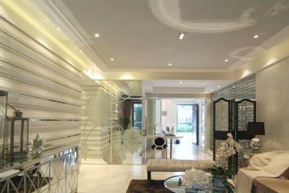
清爽个性一室一厅现代风格装修效果图
现代风格即现代主义风格，作为比较流行的一种风格，将追求时尚与潮流诠释的淋漓尽致。在装饰与布置中最大限度的体现了空间与家居的协调，在设计方面多采用几何结构，这样便设计出个性化空间的一室一厅现代风格装修效果图。 这张一室一厅现代风格装修效果图的客厅彰显个性，具有浓郁的现代感。舒适的皮质材料沙发、黑色的圆形茶几搭配了金属银的背景墙和几何图案的电视柜。这些设计的元素和材料虽然看起来都很单一，但是搭配在一起却衍生出极具个
-
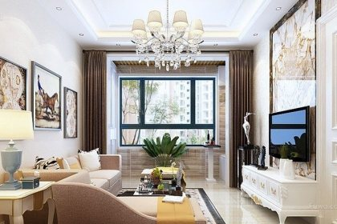
80平米房屋装修样板间,无处不在的优雅气息
简欧风格的装修常常会让人赞叹不已，尤其是无处不在的优雅气息让人颇为沉醉，下面这套80平米房屋装修样板间便是采用的简欧风格，相信大家细细欣赏过后一定会颇为难忘。其实简欧风格在这几年来一直都会受大众欢迎，究其原因无外乎两点，简欧风大气华贵，家具材质很是讲究，花纹图案很是精美，另一方面简欧风结合了现代元素，看起来更为符合现代年轻人的审美。户型：二居室 风格：简欧 费用：10万 面积：80平米 先来看看80平米房
-
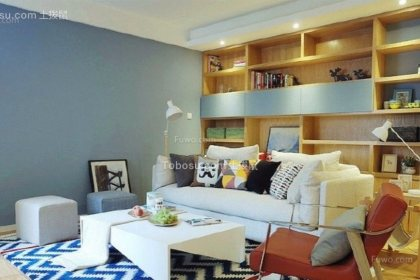
75平米两室一厅装修图片,回归自然感受美好
和小编一起欣赏唯美的75平米两室一厅装修图片，回归自然感受美好。很多人在买了新房子之后就开始着急装修起来，现在流行的装修风格五花八门每一种都有自己的特色，因此很多人就犯了难，如果您在为此问题苦恼，小编建议您不妨考虑下田园风格的装修，简约雅致温馨美好，相信看了下面这套75平米两室一厅装修图片之后，您会同意小编的看法。户型：二居室 风格：田园 费用：11万 面积：75平米 这套75平米两室一厅装修图片之所以让
-
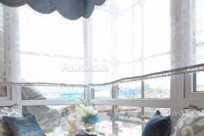
小户型窗户设计图,沐浴阳光的温馨空间
闲暇的午后，一扇窗，一壶茶，一本书，便是美好的一下午。家里的窗户也是必不可少的一个装修细节，好的窗户设计能带给人不一样的体验，让我们一起来看看几款小户型装修设计图吧，让这个洒满阳光的角落充满温馨。 在有环形窗户的家庭中，这一款小户型窗户设计图很具有特色，沿着窗户打造一个小型飘窗，放上美丽的抱枕，养上可人的植物，静静地躺在上面，看着窗外的川流不息，是最惬意不过的了。
-
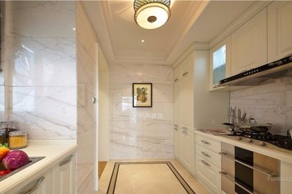
八款经典欧式厨房吊顶装修效果图
在装修界里，欧式风格一直占据着一个重要的地位。下面让我们通过几张欧式厨房吊顶装修效果图，一起来感受欧式风格下的各种艺术家所呈现出来的效果吧！ 在这张欧式厨房吊顶装修效果图中，设计师利用了户型的特点，给吊顶运用了凹凸形设计。洁白的吊顶在给人干净印象的同时，又拉长了厨房的视觉高度。圆形的吊灯在为厨房增加亮度的同时，又成为了整个吊顶的亮点。